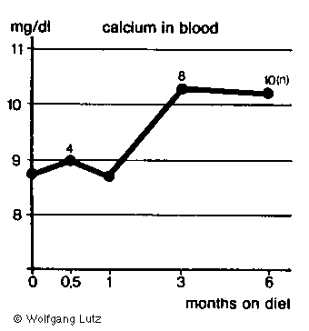
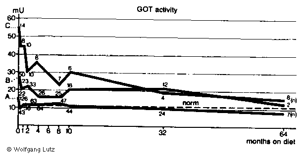
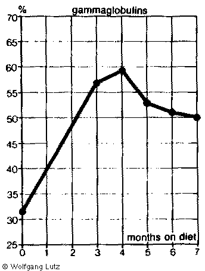

Dr. Wolfgang Lutz:
Figures from "Dismantling a Myth", Chapter VII, page 125-180

Page 149 - Fig. 16:
103 patients suffering from Crohn's disease were treated by a
low-carbohydrate diet. After a quarter of year most patients (85 percent)
showed remarkable improvement in their health. After half a year, more
than 60 percent were asymptomatic, after one year more than 70 percent and after one
and a half year about 85 percent. This is in contrast with ulcerose colitis, which Is
shown in the lowest line, improvement of which
runs much slowlier on the same diet and often is interrupted by relapses.
Crohn's disease generally thought of being incurable can so be shown to be very
well accessable to dietary measures.
|
protein |
fat |
carbohydrate |
kcal |
kilojoule |
| sum of 12 cases |
1241 |
1866 |
868 |
25422 |
106391 |
| average per case |
103 |
156 |
72 |
2118 |
8866 |
| kcal per 24 hours |
422 |
1395 |
295 |
- |
- |
Percent calories of main
nutrient sources |
20 |
66 |
14 |
- |
- |
Table 1:
Values for actually consumed nutrient components of twelve patients
with ulcerative colitis after a low-carbohydrate diet for several months.
| Absolute | Percent |
|
years |
0 |
2 |
4 |
6 |
8 |
<8 |
|
number of patients |
74 |
74 |
54 |
46 |
35 |
28 |
|
without findings |
- |
40 |
41 |
39 |
32 |
26 |
|
contact hemorrhaging |
24 |
19 |
6 |
4 |
2 |
1 |
|
spontaneous hemorrhaging |
23 |
7 |
4 |
2 |
1 |
- |
|
ulcers and fibrin |
26 |
4 |
3 |
2 |
- |
1 |
|
|
years |
0 |
2 |
4 |
6 |
8 |
<8 |
|
number of patients |
100 |
100 |
100 |
100 |
100 |
100 |
|
without findings |
- |
54 |
76 |
85 |
91 |
93 |
| contact hemorrhaging |
32 |
26 |
11 |
9 |
6 |
4 |
| spontaneous hemorrhaging |
31 |
10 |
7 |
4 |
3 |
- |
| ulcers and fibrin |
36 |
5 |
6 |
4 |
- |
4 |
|
Table 2:
Progress of ulcerative colitis of 74 patients' on a
low-carbohydrate diet. Criteria: rectoscopic findings. Decline of
hemorrhage and ulcers during two to eight years. Increase of rate of
healing to over 90 percent.

Page 155 - Fig. 11:
Graphic depiction of the values of table 2. The most severe
symptoms disappear first, contact hemorrhaging last. Simultaneous increase
of percentages of symptom-free patients
_____ = without findings;
. . . . = only contact hemorrhaging;
- - - = spontaneous hemorrhaging;
- . - . = ulcers and fibrin

Page 162 - Fig. 18:
The behaviour of hypo- (a) and hypersideroses (b) on a low-carbohydrate diet
(72 g) without other therapeutic measures.
a: 38 cases with manifest hyposiderosis. In in average a normal iron level is
attained after six months.
b: 38 cases with hypersiderosis approaching normal within then weeks. The main effect of the
carbohydrate restriction is seen in the first four weeks, in which the mean value drops to 140
milligram. The figures of "n =" show how many pations were investigated at each point.

page 166 - Fig. 19:
Abnormal low calcium levels
normalize with carbohydrate restriction.

Page 172 - Fig. 20:
The behaviour of GOT (ASAT), a parameter indicative of the
state of the liver. The speed with which a normal value is obtained
on a low-carbohydrate diet depends upon the initial value (A,B,C) .
Even in severe cases (C) the results are impressive.
n = number of cases Investigated at each date.

Page 173 - Fig. 21:
The LAP level (leucine-aryl amidase) is characteristic of the
function of the bile capillaries and the unimpeded flow of bile. Even elevated
LAP values rapidly returned to normal on a low-carbohydrate diet.

Page 174 - Fig. 22:
Chronically elevated serurn bilirubin levels are generally
considered to be incurable. Observation of such patients on a
low-carbohydrate diet, however, shows that even high values for bile
pigments in the blood can be lowered.
n = number of cases investigated at
each date.

Page 175 - Fig. 23:
GammaglobuIin as percent of totaI protein in a case of liver cirrhosis
with ascites. The rise on a low-carbohydrate diet reflects the
general anabolic effect of the diet and indicates the formation of
antibodies. This is an example of a detrimental effect not planned by
nature.
ISBN 3-9215O0-24-9
These figures are from "Dismantling a Myth - The Role of Fat and Carbohydrates in our Diet" by Dr. Wolfgang Lutz.
© 1986 by Selecta-Verlag
Dr. Ildar Idris GmbH & Co. KG Planegg V. Munchen, West Germany.
Original title "Leben ohne Brot", translated by Beatrice Idris-Duncan
and Joy Wieser.
All rights reserved. No part of this book may be reproduced
in any form or by any means electronic or mechanical, including photocopying,
recording, or by any information storage and retrieval system, without permission
in writing from the publisher.
 Scanning by Rolf. This page revised on by Dietmar
and Mik Scanning by Rolf. This page revised on by Dietmar
and Mik
Chapter
VII - with the text
Lutz start page
SCD main start page
|